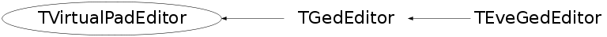

class TVirtualPadEditor
TVirtualPadEditor Abstract base class used by ROOT graphics editor
Function Members (Methods)
This is an abstract class, constructors will not be documented.
Look at the header to check for available constructors.
public:
Data Members
protected:
| static TString | fgEditorName | name of the default pad editor "Ged" |
| static TVirtualPadEditor* | fgPadEditor | singleton editor dialog |
Class Charts
{kind=link}
{kind=link}
{kind=link}
{kind=link}

Function documentation
TVirtualPadEditor * LoadEditor()
Static function returning a pointer to a new pad editor. This pointer can be adopted by a TCanvas (i.e. TRootCanvas) when it embeds the editor.
void UpdateTextAttributes(Int_t align, Float_t angle, Int_t col, Int_t font, Float_t tsize)
Update text attributes via the pad editor
void UpdateLineAttributes(Int_t col, Int_t sty, Int_t width)
Update line attributes via the pad editor
void UpdateMarkerAttributes(Int_t col, Int_t sty, Float_t msiz)
Update marker attributes via the pad editor
void DrawLine(Double_t , Double_t , Double_t , Double_t )
methods related to the old editor interface
{ }